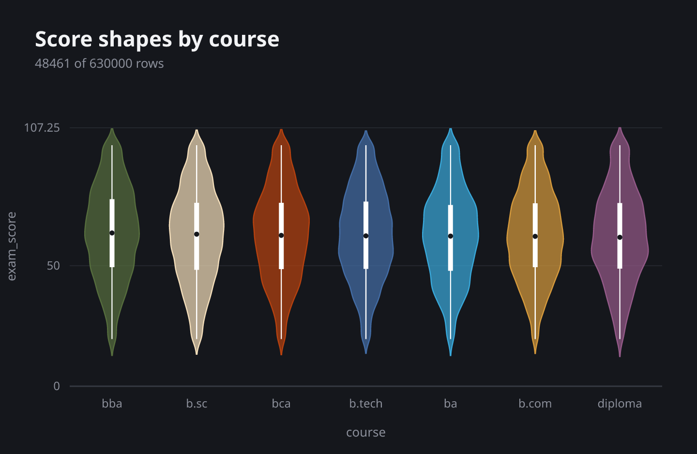
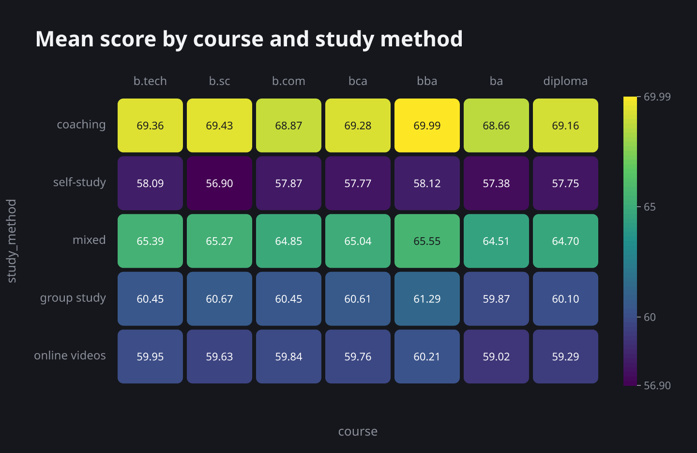
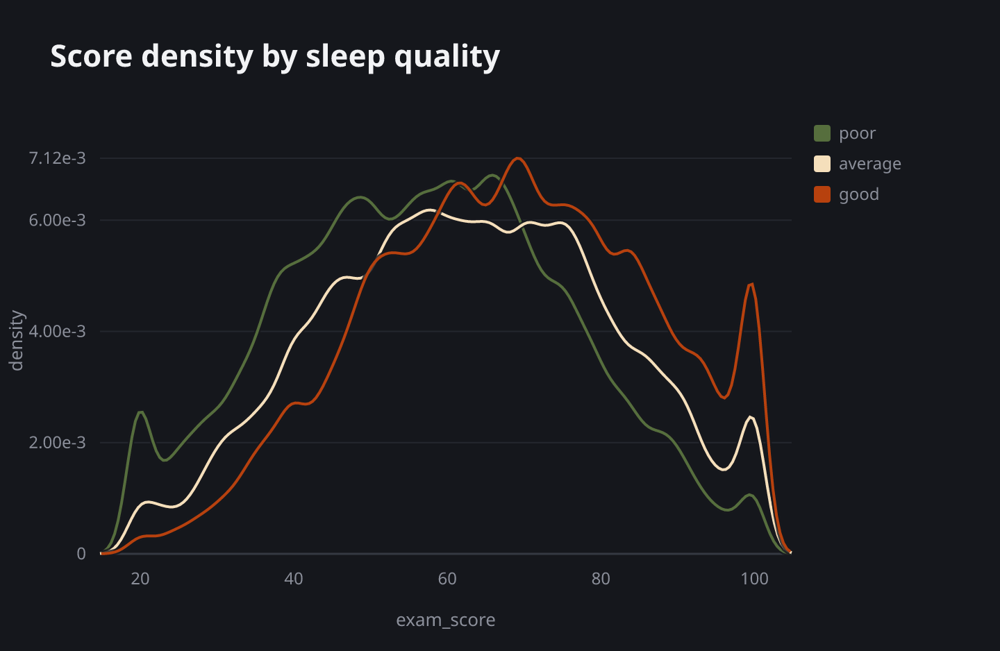
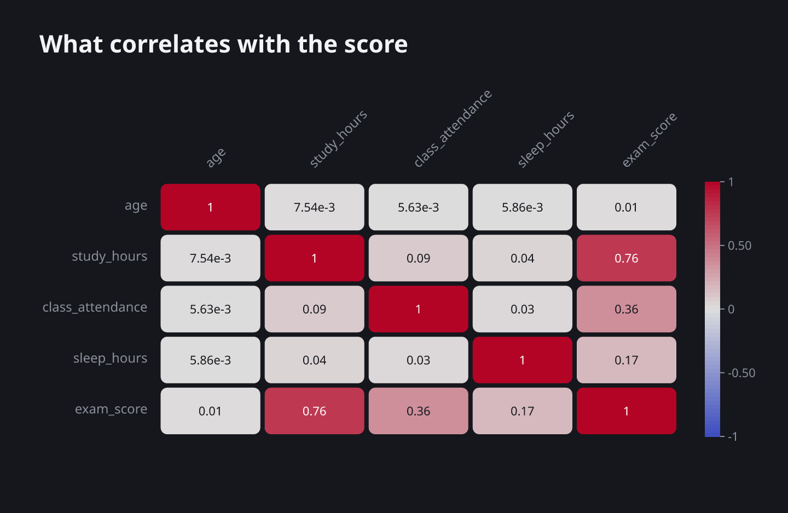

The pandas and seaborn names you know, in Rust.
rusmlai reads a CSV, works out every column’s statistics once and keeps them next to the file. Then each chart is one line. Polars does the heavy work, and the same code runs in a .rs program and in a Jupyter notebook.
Early days: loading data, column statistics and 18 charts work now. Preprocessing and models come next.
let ds: Dataset = read_csv("train.csv");
ds.countplot("course", "");120 ms read_csv parsed 630,000 rows, computed stats for 13 columns and saved them to metadata/train.json. count() drew from those stats.
Write it the way you would in Python
Methods keep their pandas and seaborn names, and defaults follow scikit-learn. Rust adds the types and the &. An empty string means “not used”, the way hue=None does.
| pandas / seaborn | rusmlai |
|---|---|
pd.read_csv("train.csv") | read_csv("train.csv") |
df.describe() | ds.describe() |
df.drop(columns=["id"]) | ds.drop(&["id"]) |
sns.countplot(df, x="course") | ds.countplot("course", "") |
sns.histplot(df, x="exam_score", bins=30) | ds.hist("exam_score", "", 30) |
sns.boxplot(df, x="course", y="exam_score") | ds.boxplot("course", "exam_score", "") |
sns.heatmap(df.corr()) | ds.corrplot() |
plt.title("Scores") | .title("Scores") |
One line per chart, and options that chain
Eighteen charts, drawn as SVG with values on hover. In a notebook a chart shows itself. In a program it saves itself as a PNG next to your data. All of these came from the same 630,000-row file.

ds.violinplot("course", "exam_score", "").sort("value")
ds.heatmap("course", "study_method", "exam_score", "mean").cmap("viridis")
ds.kdeplot("exam_score", "sleep_quality")
ds.drop(&["id"]).corrplot().cmap("coolwarm")The second read skips the work
The first read_csv computes every statistic in one pass and writes it to a small file next to the CSV. Later reads check the file’s size and modification time and load the stats back.
- First
read_csv: parse and compute stats120 ms - Later
read_csv: parse and load cached stats62 ms - Stats for all 13 columns58 ms
- Load the cached stats alone21 µs
A 630,000-row, 13-column Kaggle CSV on an i5-1135G7 laptop. The scale is logarithmic: each grid step is ten times longer than the one before.
Where rusmlai stands
Works now
read_csv,head,tail,info,describe,select,drop- Column statistics, cached next to the CSV
- 18 charts with seaborn’s names, cached the same way
- HTML tables and inline charts in Jupyter through evcxr
Coming in 1.0
- Scalers, encoders, imputers,
Pipelineandtrain_test_split - Linear models, decision trees and ensembles, kNN and naive Bayes
KMeansandPCA- Saved models that load in Python as scikit-learn objects